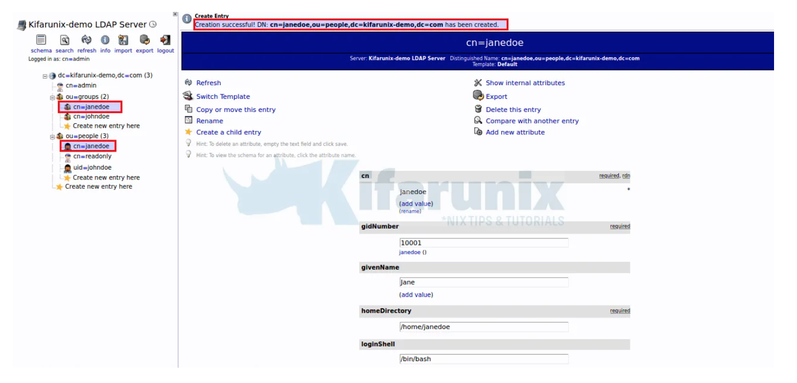

phpLDAPadmin
Cómo instalar phpLDAPadmin¶
En primer lugar se necesita instalar Apache:
sudo apt-get install apache2
Ahora podemos instalar la herramienta de administración basada en web con el comando:
sudo apt-get install phpldapadmin -y
Abra el archivo de configuración phpLDAPadmin con el comando:
sudo nano /etc/phpldapadmin/config.php
Edite las siguientes líneas (asegúrese de cambiar el dominio para que coincida con el suyo y la dirección IP para que coincida con su servidor de alojamiento):
$servers->setValue('server','name','My LDAP Server');
$servers->setValue('server','host','192.168.5.X');
$servers->;setValue('server','base',array('dc=pandora,dc=ldap'));
$servers->setValue('login','auth_type','session');
$servers->setValue('login','bind_id','cn=admin,dc=pandora,dc=ldap');
$servers->setValue('auto_number','min',array('uidNumber'=>10000,'gidNumber'=>10000));
Deshabilite el sitio predeterminado de Apache con el comando:
sudo a2dissite 000-default.conf
Reinicie Apache con el comando:
sudo systemctl restart apache2
Cómo acceder a phpLDAPadmin¶
Con todo resuelto, abra un navegador web y apúntelo a http: // SERVIDOR / phpldapadmin (donde SERVER es la dirección IP de su servidor de alojamiento). Su nombre de usuario predeterminado (en el formulario cn = admin, dc = pandora, dc = ldap) se completará automáticamente.
Escriba la contraseña de administrador que creó y haga clic en Autenticar. Debería encontrarse en la página principal de phpLDAPadmin, listo para trabajar:

Para la advertencia, simplemente puede reemplazar las llaves ( ) con corchetes ( ) en la línea afectada, 1614.\
Deprecated: Array and string offset access syntax with curly braces is deprecated in /usr/share/phpldapadmin/lib/functions.php on line 1614{}``[]
Haga clic en iniciar sesión para iniciar sesión en su interfaz de usuario web phpLDAPadmin. Como ya definimos el DN de enlace de administrador, simplemente ingrese la contraseña e inicie sesión;

Tras la autenticación exitosa, se accede en el panel de phpLDAPadmin.

Ahora puede administrar su servidor LDAP con una interfaz web.
Crear usuario y grupo LDAP en phpLDAPadmin¶
Como ejemplo, aprenderemos cómo crear un usuario LDAP y su grupo usando phpLDAPadmin.
Crear grupo posixGroup¶
Para crear un grupo dentro de otro Haga clic en ou=grupos. Luego haga clic en Create new entry here o haga clic en Create a child entry.

A continuación, haga clic en la Generic: Posix Groupplantilla para crear un grupo de usuarios LDAP.

Ingrese el nombre del grupo, que en este caso lo configuramos para que sea el mismo que el uid del usuario que vamos a crear.
Si desea que otros usuarios formen parte del grupo, seleccione sus nombres de usuario. Haga clic Create Objectuna vez hecho y confirme los cambios.

Crear usuario posixAccount¶
Una vez que haya creado un grupo de usuarios, proceda a crear la cuenta de usuario. Haga clic en ou=gruposy de manera similar, tiene dos opciones, hacer clic Create new entry hereo hacer clic Create a child entry.
Seleccione la Generic: User Accountplantilla para crear el objeto de usuario.
Generar hash de contraseña de usuario;
slappasswd
Nueva contraseña: contraseña Vuelva a ingresar la nueva contraseña: contraseña
{SSHA} vrJOf + / AFD9pdGKo / azGavDfbZ8OGJX1
Si necesita verificar si la contraseña coincide con el hash pegado, haga clic en verificar contraseña.
Cuando establezca la contraseña, seleccione ssha y pegue el hash anterior como contraseña.
Complete los detalles del usuario de manera apropiada como se muestra en la captura de pantalla a continuación;

Una vez hecho esto, haga clic Create Object y confirme los cambios.

Tenga en cuenta que para poder tener bash entre las opciones de shell, edite la plantilla de creación posixAccount y agregue la opción bash ejecutando el comando;
sed -i '/<value id="\/bin\/tsh">\/bin\/tsh<\/value>/a \\t<value id="/bin/bash">\/bin\/bash<\/value>' /etc/phpldapadmin/templates/creation/posixAccount.xml
Note
- Si tiene la información del usuario en un archivo LDIF, puede importar este archivo haciendo clic en importar en la barra de menú superior del panel izquierdo.
- Para confirmar la creación del usuario en el backend del servidor OpenLDAP puede utilizar el comnado
ldapsearch